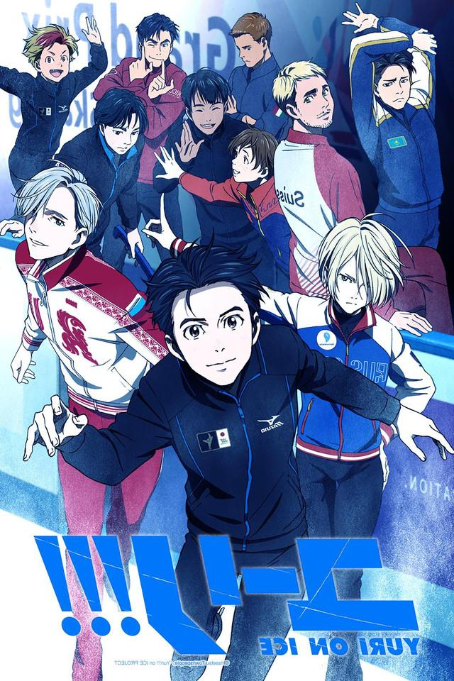

Reseña de la serie: YURI ON ICE!!!
Su trama se centra en las relaciones entre el patinador artístico japonés Yuri Katsuki, su ídolo, el campeón de patinaje artístico ruso Victor Nikiforov, y el prometedor patinador ruso Yuri Plisetsky. Mientras participan en el Grand Prix, con Victor como entrenador de Yuri K.

Reparto / elenco
- Toshiyuki Toyonaga (Yuri Katsuki)
- Jerry Jewell (Viktor Nikiforov)
- Micah Solusod (Yuri Plisetsky)
- Yoshimasa Hosoya (Otabek Altin)
- Kenshō Ono (Pichit Chulanont)
Información general
| Título |
Yuri On Ice |
| Año |
2016 |
| Genero |
Deportes |
| Director |
Sayo Yamamoto |
Trailer
Presiona aqui para ver el tráiler promocional
Recomendaciones adicionales
- One punch man
- Sakura Card Captor
- Your name
- Orange
- Lovely complex